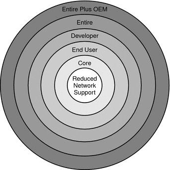

Document Information
Preface
1. Planning for a Solaris Installation From CD or DVD Media (Tasks)
Checklist for Installation
Where to Find Additional Installation Information
2. Installing With the Solaris Installation Program (Tasks)
Index
|
System Requirements and Recommendations
The following tables list basic system requirements to install the Solaris OS. Table 1-1 SPARC: Memory, Swap, and Processor RecommendationsSPARC
Based System |
Size |
|---|
Memory to install or upgrade |
512 MB is the recommended size. 256
MB is the minimum size.
Note - Some optional installation features are enabled only when
sufficient memory is present. For example, if you install from a DVD with
insufficient memory, you install through the Solaris installation program's text installer, not through
the GUI. For more information about these memory requirements, see Table 1-3.
|
Swap area |
512 MB
is the default size.
Note - You might need to customize the swap space. Swap
space is based on the size of the system's hard disk.
|
Processor requirements |
200–MHz or
faster processor is required. |
Table 1-2 x86: Memory, Swap, and Processor Recommendationsx86 Based System |
Size |
|---|
Memory to install or upgrade |
512 MB is
the recommended size. 256 MB is the minimum size.
Note - Some optional installation features
are enabled only when sufficient memory is present. For example, if you install
from a DVD with insufficient memory, you install through the Solaris installation program's
text installer, not through the GUI. For more information about these memory requirements,
see Table 1-3.
|
Swap area |
512 MB is the default size.
Note - You might need to customize
the swap space. Swap space is based on the size of the system's
hard disk.
|
Processor requirements |
120–MHz or faster processor is recommended. Hardware floating-point support is
required. |
Solaris Installation Program GUI or Text Installer Requirements
The Solaris installation program on the Solaris Operating System DVD or Solaris
Software - 1 CD can be run with a graphical user interface
(GUI) or as an interactive text installer in a desktop or console session.
For x86 based systems, the Solaris Device Configuration Assistant is included in the
Solaris installation program.
GUI – The Solaris installation GUI provides windows, pull-down menus, buttons, scrollbars, and iconic images to enable you to interact with the installation program. The GUI requires a local or remote DVD-ROM or CD-ROM drive or network connection, video adapter, keyboard, monitor, and enough memory. For more information about these memory requirements, see Table 1-3 and Table 1-4. Text installer – The Solaris interactive text installer enables you to type information in a terminal or console window to interact with the installation program. You can run the text installer in a desktop session with a windowing environment, or in a console session. The text installer requires a local or remote DVD-ROM or CD-ROM drive or network connection, keyboard, and monitor. You can run the Solaris installation text installer with the tip command. For more information, see the man page, tip(1).
You can choose to install the software with a GUI or with
or without a windowing environment. If there is sufficient memory, the GUI is
displayed by default. Other environments are displayed by default if memory is insufficient for
the GUI. You can override defaults with the nowin or text boot
options. But, you are limited by the amount of memory in your system
or by installing remotely. Also if the Solaris installation program does not detect
a video adapter, it automatically displays in a console-based environment. Table 1-3 and Table 1-4
describe these environments and list memory requirements for displaying them. Table 1-3 SPARC: Memory Requirements for Display OptionsSPARC: Memory |
Type
of Installation |
Description |
|---|
256-511 MB |
Text-based |
Contains no graphics, but provides a window and the ability
to open other windows. If you install by using the text boot option
and the system has enough memory, you are installing in a windowing environment. If
you are installing remotely through a tip line or using the nowin boot
option, you are limited to the console-based installation. |
512 MB or greater |
GUI-based |
Provides windows, pull-down
menus, buttons, scrollbars, and iconic images. |
Table 1-4 x86: Memory Requirements for Display Optionsx86: Memory |
Type of Installation |
Description |
|---|
256–511 MB |
Text-based |
Contains no graphics,
but provides a window and the ability to open other windows. If you
install by using the text boot option and the system has enough memory,
you are installing in a windowing environment. If you are installing remotely through
a tip line or using the nowin boot option, you are limited to
the console-based installation. |
512 MB |
GUI-based |
Provides windows, pull-down menus, buttons, scrollbars, and iconic images. |
You can also specify the installer you want to use during the
installation by entering a selection or special command at a prompt. For instructions, see
the procedures in Chapter 2, Installing With the Solaris Installation Program (Tasks).
General Disk Space Planning and Recommendations
Planning disk space is different for everyone. Consider allocating space for the following
conditions, depending on your needs. Table 1-5 General Disk Space and Swap Space PlanningConditions for Space Allocations |
Description |
|---|
File systems |
For each file system
that you create, allocate an additional 30 percent more disk space than you
need to enable you to upgrade to future Solaris versions. By default,
the Solaris installation methods create only root (/) and /swap. When space is
allocated for OS services, the /export directory is also created. If you
are upgrading to a major Solaris release, you might need to reslice your
system or allocate double the space that you need at installation time. If
you are upgrading to an update, you could prevent having to reslice your
system by allocating extra disk space for future upgrades. A Solaris update release
needs approximately 10 percent more disk space than the previous release. You can
allocate an additional 30 percent of disk space for each file system to
allow space for several Solaris updates. |
The /var file system |
If you intend to
use the crash dump feature savecore(1M), allocate double the amount of your physical
memory in the /var file system. |
Swap |
The Solaris installation program allocates a
default swap area of 512 Mbytes under the following conditions:
By default, the Solaris
installation programs allocate swap space by placing swap so that it starts at
the first available disk cylinder (typically cylinder 0 on SPARC based systems). This
placement provides maximum space for the root (/) file system during the
default disk layout and enables the growth of the root (/) file
system during an upgrade. If you think you might need to expand the
swap area in the future, you can place the swap slice so that
it starts at another disk cylinder by using one of the following methods.
For an overview of the swap space, see Chapter 20, Configuring Additional Swap Space (Tasks), in System Administration Guide: Devices and File Systems. |
A server that is
providing home directory file systems |
By default, home directories are usually located in
the /export file system. |
The Solaris software group you are installing |
A software group is
a grouping of software packages. When you are planning disk space, remember that
you can add or remove individual software packages from the software group that
you select. For information about software groups, see Disk Space Recommendations for Software Groups. |
Upgrade |
|
Language support |
For example, Chinese,
Japanese, or Korean. If you plan to install a single language, allocate approximately
0.7 Gbytes of additional disk space for the language. If you plan
to install all language supports, you need to allocate up to approximately
2.5 Gbytes of additional disk space for the language supports, depending on the
software group you install. |
Printing or mail support |
Allocate additional space. |
Additional software or
third-party software |
Allocate additional space. |
Disk Space Recommendations for Software Groups
The Solaris software groups are collections of Solaris packages. Each software group includes
support for different functions and hardware drivers.
For an initial installation, you select the software group to install, based on the functions that you want to perform on the system. For an upgrade, you must upgrade to a software group that is installed on the system. For example, if you previously installed the End User Solaris Software Group on your system, you cannot use the upgrade option to upgrade to the Developer Solaris Software Group. However, during the upgrade you can add software to the system that is not part of the currently installed software group.
When you are installing the Solaris software, you can choose to add or
remove packages from the Solaris software group that you selected. When you
are selecting which packages to add or remove, you need to know
about software dependencies and how the Solaris software is packaged. The following figure shows the grouping of software packages. Reduced Network Support contains
the minimal number of packages and Entire Solaris Software Group Plus OEM Support
contains all the packages. Figure 1-1 Solaris Software Groups Table 1-6 lists the Solaris software groups and the recommended amount of disk space
that you need to install each group.
Note - The disk space recommendations in Table 1-6 include space for the following items.
You might find that the software groups require less disk space than the
amount that is listed in this table. For additional information about how to plan your disk space, see Allocating Disk and Swap Space in Solaris Express Installation Guide: Planning for Installation and Upgrade.
Table 1-6 Disk Space Recommendations for Software GroupsSoftware Group |
Description |
Recommended
Disk Space |
|---|
Entire Solaris Software Group Plus OEM Support |
Contains the packages for the
Entire Solaris Software Group plus additional hardware drivers, including drivers for hardware that
is not on the system at the time of installation. |
6.8 Gbytes |
Entire Solaris Software
Group |
Contains the packages for the Developer Solaris Software Group and additional software that
is needed for servers. |
6.7 Gbytes |
Developer Solaris Software Group |
Contains the packages for
the End User Solaris Software Group plus additional support for software development. The
additional software development support includes libraries, include files, man pages, and programming tools. Compilers
are not included. |
6.6 Gbytes |
End User Solaris Software Group |
Contains the packages that provide
the minimum code that is required to boot and run a networked Solaris
system and the Common Desktop Environment. |
5.3 Gbytes |
Core System Support Software Group |
Contains the
packages that provide the minimum code that is required to boot and run
a networked Solaris system. |
2.0 Gbytes |
Reduced Network Support Software Group |
Contains the packages that
provide the minimum code that is required to boot and run a Solaris
system with limited network service support. The Reduced Network Support Software Group provides
a multiuser text-based console and system administration utilities. This software group also
enables the system to recognize network interfaces, but does not activate network
services. |
2.0 Gbytes |
|